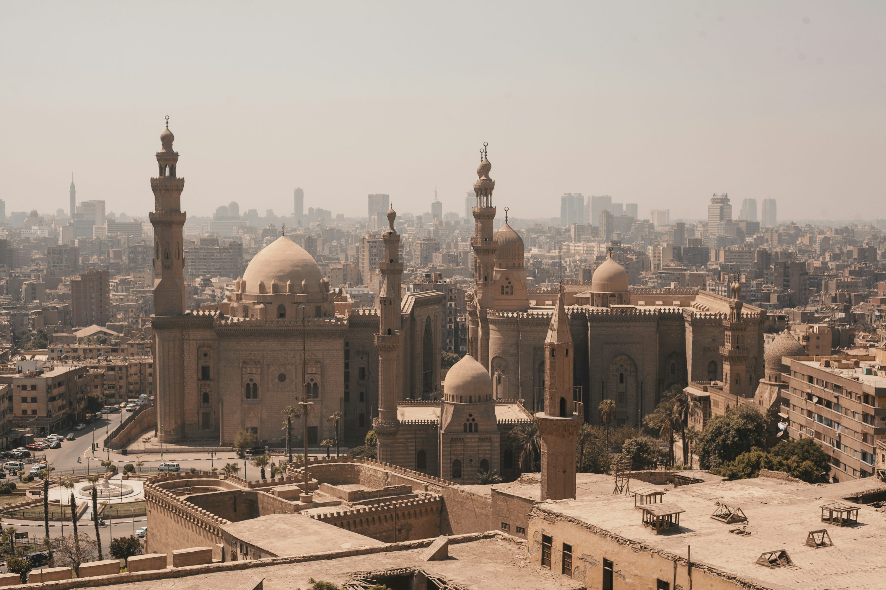
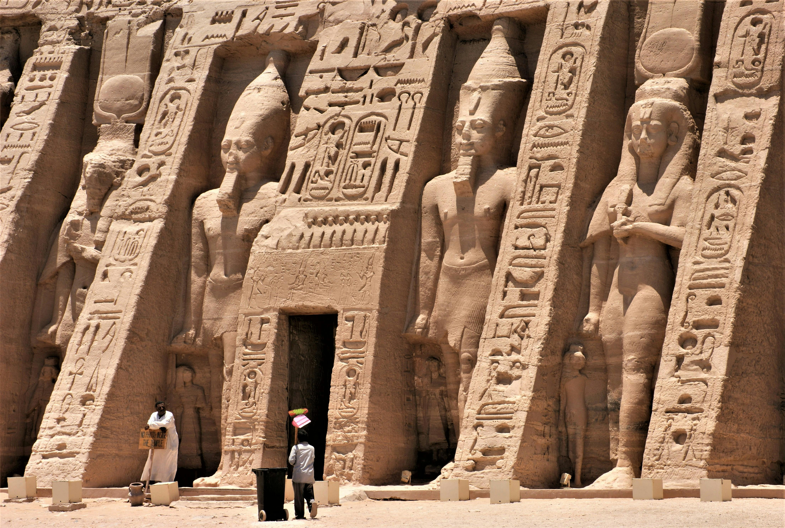
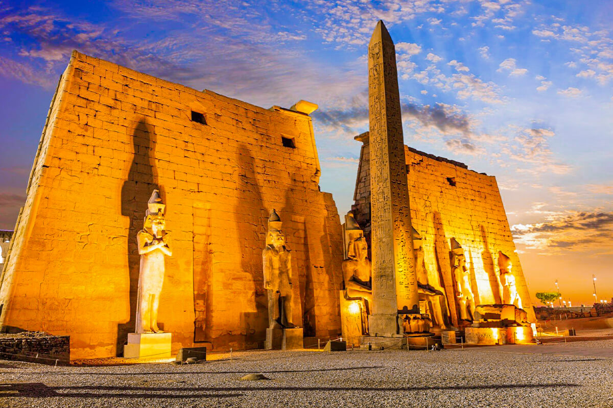
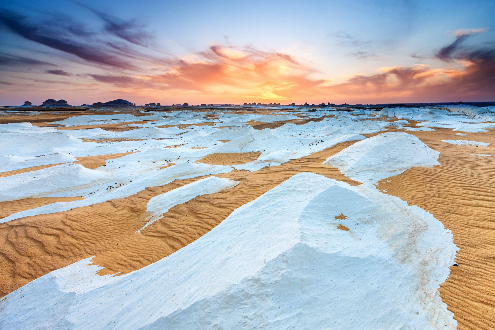
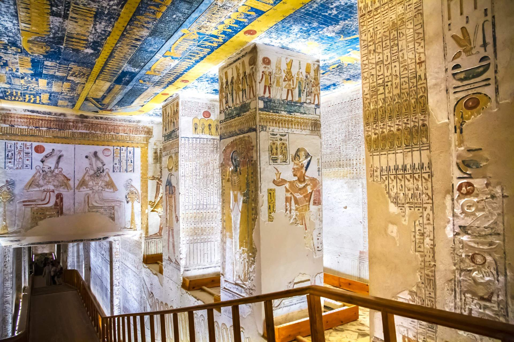
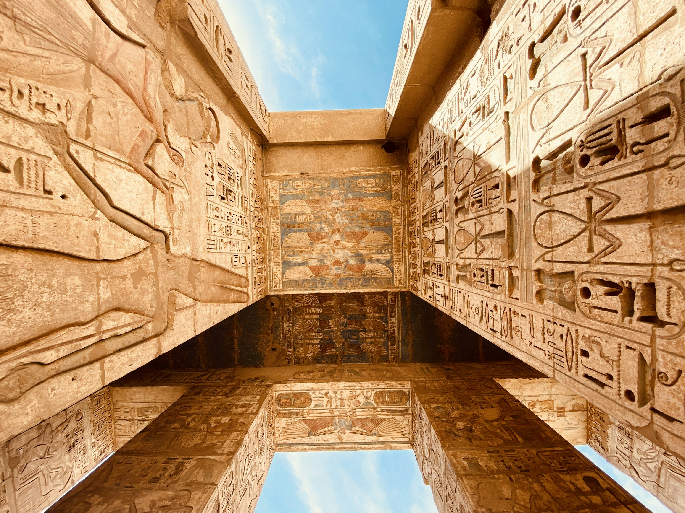
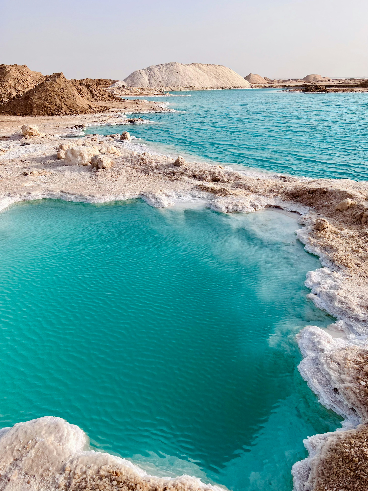
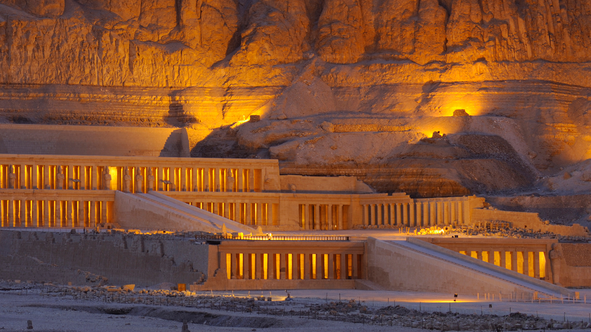

Highlights
Popular Destinations









Egypt stirs something timeless in those who visit, a feeling that blends awe with quiet reflection. It is a place where history lives in the present, where the pulse of the Nile still guides life just as it did thousands of years ago. From golden deserts to temples rising from the sand, every corner reveals a story of endurance, artistry, and faith.
Imagine the hush of dawn at Abu Simbel as sunlight spills across ancient stone, or the calm of a felucca gliding past palm-lined shores. Picture the scent of spices drifting through Cairo's markets, and the sound of prayer echoing across a city built on history. Egypt's beauty lives in both its grandeur and its humanity, a balance of wonder and warmth that stays with you.
There is a quiet magic to Egypt that unfolds in the spaces between wonder and reflection. The first light over the Nile, the hush inside an ancient temple, or the golden shimmer of desert sand all remind you that time moves differently here.
Every experience uncovers a new facet of Egypt's soul. You might trace carvings that have endured for millennia, glide across calm waters where civilization began, or stand beneath pyramids glowing in the fading light. The people welcome you with warmth that feels timeless, their stories woven into the rhythm of the land.
The essence of Egypt unfolds slowly, like sunlight spreading across the temples of Luxor. You might trace the artistry of hieroglyphs carved in devotion, or share laughter with locals along a market street rich with spice and color. Egypt does not simply captivate; it changes you, leaving its rhythm quietly written on your soul.
Explore bustling bazaars and artisan stalls where alabaster carvings, copper lamps, and handwoven textiles reflect Egypt's artistic legacy. Bring home perfumes, spices, or papyrus art.
Delight in the rich flavors of Egyptian cuisine, from koshari layered with lentils and rice to grilled fish fresh from the Nile and sweet pastries drizzled with honey.
Sip strong Egyptian coffee in a shaded café, taste fresh sugarcane juice pressed before your eyes, or unwind with a glass of hibiscus tea.
Travel seamlessly between Egypt's major regions by domestic flight, train, or private car. Routes along the Nile and across the desert reveal ever-changing landscapes.
Taxis, ride apps, and car hires make navigating Egypt's cities straightforward and affordable. Many historic areas, like Old Cairo and Luxor's temple district, are best explored on foot.
Step beyond the cities to discover Egypt's quieter wonders. From the vast silence of the White Desert to the palm-filled oases of Siwa and the tranquil beauty of Lake Nasser.
Egypt Standard Time (EET), which is GMT+2. Daylight saving time is not observed.
Uber and Careem operate in major cities, offering reliable and convenient transportation. Taxis are common, but it's best to agree on a fare before the ride.
Egypt uses 220V electricity with a frequency of 50Hz. Outlets typically support plug types C and F, so travelers from other regions may need a universal adapter.
Egypt has a desert climate with hot, dry summers and mild winters. The most pleasant time to visit is from October to April, when temperatures are cooler.
Egypt's monumental landscapes have appeared in countless films, from Death on the Nile to The Mummy. The country has given the world legendary figures like actor Omar Sharif, singer Umm Kulthum, and filmmaker Youssef Chahine.
Emergency Services: 122
Police: 122
Medical Emergency: 123
Tourist Police: 126
Country Code: +20







